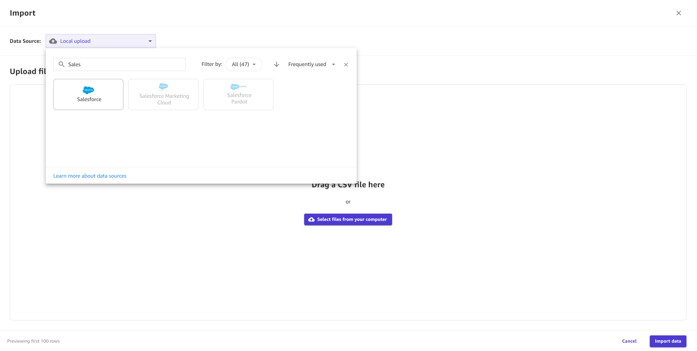
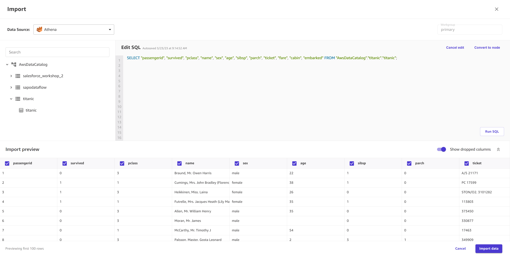

Create a dataset
The following sections describe how to create a dataset in Amazon SageMaker Canvas. For custom models, you can create datasets for tabular and image data. Choose your workflow based on the following information:
-
For categorical, numeric, text, and timeseries data, see Import tabular data.
-
For image data, see Import image data.
Note
For information about how to import a document dataset for Ready-to-use models that accept document data, see the Import document data workflow in the Ready-to-use models documentation.
A dataset can consist of multiple files. For example, you might have multiple files of inventory data in CSV format. You can upload these files together as a dataset as long as the schema (or column names and data types) of the files match.
Canvas also supports managing multiple
versions of your dataset. When you create a dataset, the first version is labeled as V1. You can
create a new version of your dataset by updating your dataset. You can do a manual update, or you
can set up an automated schedule for updating your dataset with new data. For more information,
see Update a dataset.
When you import your data into Canvas, make sure that it meets the requirements in the following table. The limitations are specific to the type of model you’re building.
| Limit | 2 category, 3+ category, numeric, and time series models | Text prediction models | Image prediction models | *Document data for Ready-to-use models |
|---|---|---|---|---|
Supported file types |
CSV and Parquet (local upload, Amazon S3, or databases) JSON (databases) |
CSV and Parquet (local upload, Amazon S3, or databases) JSON (databases) |
JPG, PNG |
PDF, JPG, PNG, TIFF |
Maximum file size |
5 GB (for all files in the dataset) |
5 MB (for all files in the dataset) |
30 MB per image |
5 MB per document |
Maximum number of files in tabular datasets |
50 |
50 |
N/A |
N/A |
Maximum number of files in tabular datasets for a single manual upload |
20 |
20 |
N/A |
N/A |
Maximum number of columns |
1000 |
1000 |
N/A |
N/A |
Maximum number of entries (rows, images, or documents) for Quick builds |
50,000 |
7500 |
5000 |
N/A |
Maximum number of entries (rows, images, or documents) for Standard builds |
N/A |
150,000 |
180,000 |
N/A |
Minimum number of entries (rows) for Quick builds |
2 category: 500 3+ category, numeric, time series: N/A |
N/A |
N/A |
N/A |
Minimum number of entries (rows, images, or documents) for Standard builds |
250 |
50 |
50 |
N/A |
|
Minimum number of entries (rows or images) per label |
N/A |
25 |
25 |
N/A |
Minimum number of labels |
2 category: 2 3+ category: 3 Numeric, time series: N/A |
2 |
2 |
N/A |
|
Minimum sample size for random sampling |
500 |
N/A |
N/A |
N/A |
|
Maximum sample size for random sampling |
40,000 |
N/A |
N/A |
N/A |
| Maximum number of labels |
2 category: 2 3+ category, numeric, time series: N/A |
1000 |
1000 |
N/A |
*Document data is currently only supported for Ready-to-use models that accept document data. You can't build a custom model with document data.
Also note the following restrictions:
-
For tabular data, Canvas disallows selecting any file with extensions other than .csv, .parquet, .parq, and .pqt for both local upload and Amazon S3 import. CSV files must be comma delimited and not have newline characters except when denoting a new row.
-
For tabular data using Parquet files, note the following:
Parquet files can't include complex types like maps and lists.
The column names of Parquet files can't contain spaces.
If using compression, Parquet files must use either gzip or snappy compression types. For more information about the preceding compression types, see the gzip documentation
and the snappy documentation .
-
For image data, if you have any unlabeled images, you must label them before building your model. For information about how to assign labels to images within the Canvas application, see Edit an image dataset.
-
If you set up automatic dataset updates or automatic batch prediction configurations, you can only create a total of 20 configurations in your Canvas application. For more information, see Manage automations.
After you import a dataset, you can view your datasets on the Datasets page at any time.
Import tabular data
With tabular datasets, you can build categorical, numeric, time series forecasting, and text prediction models. Review the limitations table in the preceding Import a dataset section to ensure that your data meets the requirements for tabular data (note that the sample size limits only apply when previewing your data before building your model).
Use the following procedure to import a tabular dataset into Canvas:
-
Open your SageMaker Canvas application.
-
In the left navigation pane, choose Datasets.
-
Choose Import.
-
In the popup dialog box, in the Dataset name field, enter a name for the dataset and choose Create.
-
On the Import page, open the Data Source dropdown menu.
-
Choose your data source:
-
To upload files from your computer, choose Local upload.
-
To import data from another source, such as an Amazon S3 bucket or a Snowflake database, search for your data source in the Search data source bar. Then, choose the tile for your desired data source.
Note
You can only import data from the tiles that have an active connection. If you want to connect to a data source that is unavailable to you, contact your administrator. If you’re an administrator, see Connect to data sources.
The following screenshot shows the Data Source dropdown menu.
 -
-
(Optional) If you’re connecting to an Amazon Redshift or Snowflake database for the first time, a dialog box appears to create a connection. Fill out the dialog box with your credentials and choose Create connection. If you already have a connection, choose your connection.
-
From your data source, select your files to import. For local upload and importing from Amazon S3, you can select files. For database sources, you can drag-and-drop data tables from the left navigation pane.
-
(Optional) For tabular data sources that support SQL querying (such as Amazon Redshift, Amazon Athena, or Snowflake), you can choose Edit in SQL to make SQL queries and join tables before importing them. For more information, see Join data that you've imported into SageMaker Canvas.
The following screenshot shows the Edit SQL view for an Amazon Athena data source.
 -
(Optional) You can choose Preview to preview your dataset before importing. For tabular datasets, this shows you up to the first 100 rows of your dataset. The following screenshot shows you the Import preview screen
-
When you’re ready to import your data, choose Import data.
While your dataset is importing into Canvas, you can see your datasets listed on the Datasets page. From this page, you can View your dataset details.
When the Status of your dataset shows
as Ready, Canvas successfully imported your data and you can proceed with building a
model.
If you have a connection to a data source, such as an Amazon Redshift database or a SaaS connector, you can return to that connection. For Amazon Redshift and Snowflake, you can add another connection by creating another dataset, returning to the Import data page, and choosing the Data Source tile for that connection. From the dropdown menu, you can open the previous connection or choose Add connection.
Note
For SaaS platforms, you can only have one connection per data source.
Import image data
With image datasets, you can build single-label image prediction custom models, which predict a label for an image. Review the limitations in the preceding Import a dataset section to ensure that your image dataset meets the requirements for image data.
Note
You can only import image datasets from local file upload or an Amazon S3 bucket. Also, for image datasets, you must have at least 25 images per label.
Use the following procedure to import an image dataset into Canvas:
-
Open your SageMaker Canvas application.
-
In the left navigation pane, choose Datasets.
-
Choose Create.
-
From the dropdown menu, choose Image.
-
In the popup dialog box, in the Dataset name field, enter a name for the dataset and choose Create.
-
On the Import page, open the Data Source dropdown menu.
-
Choose your data source. To upload files from your computer, choose Local upload. To import files from Amazon S3, choose Amazon S3.
-
From your computer or Amazon S3 bucket, select the images or folders of images that you want to upload.
-
When you’re ready to import your data, choose Import data.
While your dataset is importing into Canvas, you can see your datasets listed on the Datasets page. From this page, you can View your dataset details.
When the Status of your dataset shows
as Ready, Canvas successfully imported your data and you can proceed with building a
model.
When you are building your model, you can edit your image dataset, and you can assign or re-assign labels, add images, or delete images from your dataset. For more information about how to edit your image dataset, see Edit an image dataset.
View your dataset details
For each of your datasets, you can view all of the files in a dataset, the dataset’s version history, and any auto update configurations for the dataset. From the Datasets page, you can also initiate actions such as Update a dataset or Build a custom model.
To view the details for a dataset, do the following:
-
Open the SageMaker Canvas application.
-
In the left navigation pane, choose Datasets.
-
From the list of datasets, choose your dataset.
On the Data tab, you can see a preview of your data. If you choose Dataset details, you can see all of the files that are part of your dataset. Choose a file to see only the data from that file in the preview. For image datasets, the preview only shows you the first 100 images of your dataset.
On the Version history tab, you can see a list of all of the versions of your dataset. A new version is made whenever you update a dataset. To learn more about updating a dataset, see Update a dataset. The following screenshot shows the Version history tab in the Canvas application.
On the Auto updates tab, you can enable auto updates for the dataset and set up a configuration to update your dataset on a regular schedule. To learn more about setting up auto updates for a dataset, see Configure automatic updates for a dataset. The following screenshot shows the Auto updates tab with auto updates turned on and a list of auto update jobs that have been performed on the dataset.